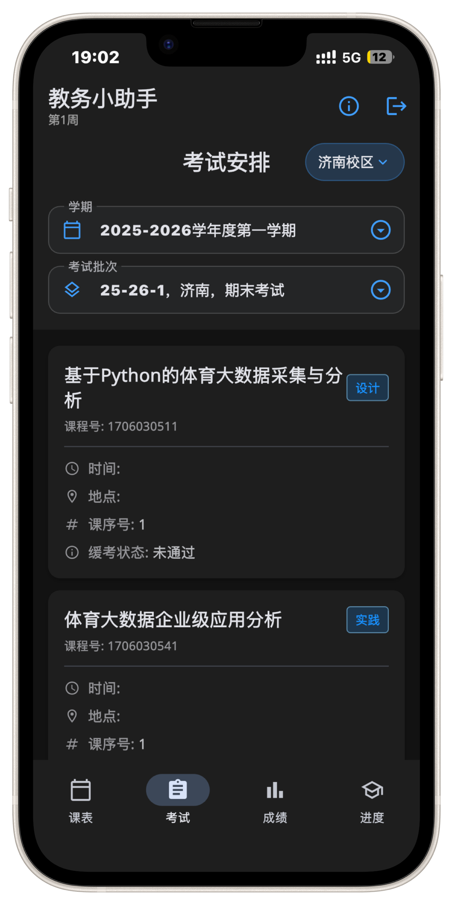

专为山东体育学院学子打造
你的私人教务管家
让校园生活更简单。
基于 Flutter 的全新轻量级客户端。告别教务系统繁杂的操作，课表、成绩、学业进度一目了然，甚至断网也能随时掌控。
* iOS需通过 Sideloadly 或爱思助手自签安装

APP 预览图掌握学业，从未如此简单
基于学生痛点量身定制的三大核心功能
📅
随心课表与考务
告别臃肿的网页教务系统。通过应用直接获取本学期最新课表，支持按周次自由切换可视化视图，考试安排一键查询，上课永不错过。
📈
成绩与学业追踪
打破信息黑盒。快速查询各学期详细成绩单，直观展示平均学分绩点（GPA）与目前已获学分情况，培养方案进度了如指掌。
📱
离线缓存与小组件
网络不佳也能畅通无阻，智能离线缓存设计保留最近数据。更有 iOS 与 Android 原生桌面小组件加持，核心概览桌面上抬眼即见。